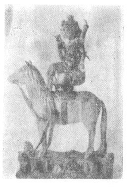

| 偶人信仰の民俗化並びに伝説化せる道 | |
| 折口 信夫 | |
| (2012) | |
偶人信仰の民俗化並びに伝説化せる道
折口信夫
一 祝言の演劇化
万葉巻十六の「乞食者詠
」とある二首の長歌は、ほかひゞと
の祝言
が、早く演劇化した証拠の、貴重な例と見られる。二首ながら、二つの生き物の、からだの癖
を述べたり、愁訴する様を歌うたりして居るが、其内容から見ても、又表題の四字から察しても、此歌には当然、身ぶりが伴うて居たと考へてよい。「詠」はうた
と訓
み慣
れて来たが、正確な用字例は、舞人の自ら諷誦
する詞章である。
此歌は、鹿・蟹の述懐歌らしいものになつて居るが、元は農業の、害物駆除の呪言
から出て居る。即、田畠を荒す精霊の代表として、鹿や蟹に、服従を誓はす形の呪言があり、鹿や蟹に扮した者の誓ふ、身ぶりや、覆奏詞
があつた。此副演出の部分が発達して、次第に、滑稽な詠、をこ
な身ぶりに、人を絶倒させるやうな演芸が、成立するまでに、変つたのだと思ふ。
其身ぶりを、人がしたか、人形がしたかは訣らない。併し、呪言の副演出の本体は、人体であるが、もどき
役に廻る者は、地方によつて、違うて居た。人間であつた事も勿論あるが、ある国・ある家の神事に出る精霊役は、人形である事もあり、又鏡・瓢
などを顔とした、仮りの偶人である事もあつた。此だけの事は、考へてよい根拠が十分にある。
ほかひゞと
は、細かに糺して見ると、くゞつ
とおなじ者でない処も見える。併し、此ほかひゞと
の中に、沢山のくゞつ
も交つて居た事は考へてよい。私は、くゞつ
・傀儡子
同種説は、信ずる事が出来ないで居るが、くゞつ
の名に宛て字せられた、傀儡子の生活と、何処までも、不思議に合うて居るのは、事実である。
くゞつ
の民の女が、人形を舞はした事は、平安朝の中期に文献がある。其盛んに見えたのは、真に突如として、室町の頃からであるが、以前にも、所々方々に、下級の神人
や、くゞつ
の手によつて行はれて居た。此団体が、摂津広田の西ノ
宮から起つた様に見えるのは、恐らく、新式であつた為、都人士に歓ばれたからであらう。
西ノ
宮一社について見れば、祭り毎に、海のあなたから来り臨む神の形代
としての人形
に、神の身ぶりを演じさせて居たのが、うかれびと
の祝言に使はれた為に、門芸
としての第一歩を、演芸の方に踏み入れる事になつたのだと思はれる。
二 八幡神の伴神
祭礼に人形
を持ち出す社は、今でも諸地方にある。殊に、八幡系統の神社に著しい。八幡神は、疑ひもなく、奈良朝に流行した新来
の神である。私は、日本の仏教家の陰陽道
が、将来した神ではないかと考へて居る。譬へば、すさのをの
命を、牛頭
天王と言うたり、武塔
天神と言うたりする様に、八幡神も、多分に陰陽道式のものを持つて居る。仏教式に合理化せられ、習合せられた新来神と言へさうだ。
其はとにかく、此神が、兇暴な神である様に見られたのは、八幡神自身が、兇暴と言ふよりも、西から上つて来る途中、其土地々々の、兇悪な土地神を征服して、此を部下にして行つた、其為だと思はれる。此征服の結果は、最初は、部下にしたのだが、後には、若宮として、父子の関係で示される様になつた。
かうして八幡神の信仰が、宣伝せられて行く中に、地方々々の神々を含んで行つた。それ等の神々は、巨人の形をとつて、其土地の八幡神の信仰を受け持つことになつた。八幡神側から言へば、臣従を誓はせる事によつて――父子の形はとつても――土地の害悪を押へたのである。
此部下は、人形
の形をとつた。巨人
の像で示されたのである。譬へば、日向岩川八幡の大人
弥五郎の様なものが出来た。さうして、此が八幡神の行列には必、伴神として加はつた。日本の巨人
伝説には、此行列の印象から生れた、と考へられるものがある。証拠は段々とある。らしよなりずむ
に囚はれた人類学・考古学の連衆は、無反省に、先住民族を持ち出すが、尠くとも、日本の巨人伝説を考へるには、此行列の印象のある事を忘れてはならない。九州で大人弥五郎と言ひ、中国で大太郎法師と言ひ、平家物語にはだいたら
法師とある様に、此印象が、殆全国に亘つて、伝説化せられて居る。勿論其には、沼を作り、山を担いだなどゝある、一代前の巨人伝説が、結びついても居る。此二者が結合して、新しい巨人伝説が出来た、と見るのがよろしいであらう。大太郎法師を高良
明神とし、高良明神を武内宿禰に仮托したのは、八幡神を、応神天皇に附会した為の誤解からである。それでも、脇座
の神としての印象だけは、採り入れて居る。
八幡神の伴神でも、まだ御子
神としての考への出ない前のものが、即、才
の男
である。伴神が二つに分れて、既に服従したものと、尚、服従の途中にあるものとに分れた。才の男に、からかひ
かける態のあるのは、あまのじやく
と称する伝説上の怪物・里神楽のひよつとこ
などゝ同じやうに、尚服従の途中にある事を示して居るのである。巨人
の方は、既に服従したものである。だから行列に於いて、前立となるのである。
三 才の男・細男・青農
才の男は、せいのう
とも発音したらしい。青農と書いたものがある。又、細男と書いて、せいのう
と訓ませても居る。共に、此場合は、多く人形
の事の様であるが、才の男の方は、人である事もあつた。平安朝の文献に、宮廷の御神楽
に、人長
の舞ひの後、酒一巡して、才の男の態がある、と次第書きがある。此は一種の猿楽で、滑稽な物まねであつたと思はれる。「態」とあるによつて、わざ
・しぐさ
を、身ぶりで演じた事が示されて居る。
この「態」の略字が「能」である。田楽能・猿楽能など言ふ、身ぶり狂言の能は、此から来た。併し、宮廷の御神楽に出る、才の男が人間であるのは、元偶人が演じた態を、人間がまねたのだと考へられる。一体、今日伝はる神楽歌は、石清水
系統のものである。此派の神楽では、才の男同時に青農で、人形に猿楽を演ぜしめたのであらう。だから才の男は、人形であるのが本態で、宮廷の御神楽に出る才の男が人間であるのは、其変化である、と見る考へはなり立つと思ふ。
神楽に出る才の男が、猿楽風に物まねをするのは、神の暗示を具体化する、副演出と見る事が出来る。此は元来、才の男が精霊役で、別に、此に対する神があり、神がして
、才の男がわき
と言ふ風に、対立して演じた事から生じた、と解すればよい。併し、神・精霊の考へは、常に変化転換して居る。譬へば、宇佐八幡と関係の深い、筑前志賀
ノ
島
の祭りに、人形を船に乗せて、沖に漕ぎ出で、船の上から、海底を蒞
かせる式がある。海の精霊を、祭りに参与せしめる為の、お迎へ人形であるから、元来は海底の神が精霊である訣だが、この場合には、お迎へ人形の方が、精霊の位置に変る。併し、更に考へて見ると、海底の精霊と言ふのが、実は、嘗ては、他界から来る権威ある神であつたのだ。又、さうした事は、逆にも行はれて居る。宇佐八幡に対すると、志賀ノ
島の海底神は、精霊の大なるもの、と言ふ事になるのである。
此から、阿度目
ノ
磯良
――後に人と考へる様になつて、磯良丸とも言ふ――を考へる様になつた。磯良は、海底を支配する海人の神だ、と言はれて居る。此名に関係のあるものでは、神楽歌に磯良前
がある。「いせじまやあまのとねらがたくほのけいそらがさきに云々」と言ふので、此歌だけで見ると、阿度目ノ
磯良と、別に関係はない様であるが、元はあつたに相違ない。
神楽の最初に「阿知女々々々於々々
」とある阿知女作法と言ふのは、太平記が伝へる名高い伝説でも、想像が出来る様に、「阿知女々々々」は磯良を呼ぶので、「於々々」は磯良の返答である。或は、人長と才の男と言うた様な対立で、演じたものであつたかも知れない。とにかく、磯良の出現によつて、此儀式の始まつた元の記憶だけは、止めて居たと見られる。原意は、既に忘却を重ねた後にまでも、尚、此を繰り返して居たのである。阿知女を鈿女
だとする説もあるが、阿知女・阿度女は、海人
の宰領である、安曇
氏の事でなければならない。磯良が、海底を支配する海人
の神だ、と言ふ伝説の意味も、それで訣る。
私の考へ方としては、海の神の信仰が山の神の信仰に移つたとするのであるから、譬ひ磯良の信仰には、更に、山の大人
の考へをば、反映して居るとしても、根本的には、古いものと見られる。
四 くゞつ と人形との関係
民間信仰・民俗芸術の上の諸相は、単純化の容易に行はれるものではない。けれども、仮りに、簡単な形を考へて見るとしたら、才
の男
は、海系統のもの、大人
は山系統のものと見てよいであらう。でも、此二つは、元はやはり、一つ考へのものでなければならない。
この才の男の末が、二つに分れて、一つは、傀儡子の手に移つて、てくゞつ
から、次第々々に、木偶
人形となつた。てくゞつ
人形の略語が、でく
人形となつたのであらう。今一流は、早く大人
と融合して、大社々々の細男・青農となつた。
細男側の才の男は、離宮
八幡のものゝ様に、手の動くものもあるが、多くは、単なる偶像となつて、形の上から見ると、恰も、一つもの
ゝ人形と同じ様に、祭りの行列の最初に練
つて行く。
一つもの
にも、人形と人間との二通りがある。従来の考へ方では、此は尸童
系統のものであるから、人間を本態とする事になつて居るが、併し、人形を以つてする形式も多い事だし、旁
、どちらを先ともきめられない様である。
志賀
ノ
島
の祭りに、お迎へ人形の出ることは、海部
の民と、八幡神の信仰とが結びついて居る、一つの記念と見られる。海部の民も、人形
を重んじた。これが、くゞつ
の人形舞はし・ゑびすかき
にまで、続くのである。
くゞつ
と人形との関係は、平安朝中期以後の材料と、遥かに時代の離れた戦国以後の材料とをつき合せて、其間の連絡をつけるより為方がないほど、中間が空白になつて居る。だが、旧来の考への様に、人形芝居は、西の宮・淡路の芸能人によつて始まつた、などゝは言へない事である。其間のつなぎには、百太夫――漢文式に表現して百神とも――と称するものが実在する。
此民の持つて歩いた人形と言ふのは、恐らく、もと小さなものであつて、旅行用具の中に納めて、携帯する事が出来たのだと思ふ。さうした霊物を入れる神聖な容器が、所謂、莎草
で編んだくゞつこ
であつたのだらう。さう考へて見ると、此言葉の語原にも、見当がつく。くゞつ
は、くゞつこ
・くゞつと
の語尾脱略ではないだらうか。恰も、山の神人の後と考へてよいほかひゞと
の持つ行器が、神聖なほかゐ
である様に、海の神人の持つ神聖な袋が、くゞつこ
であり、其に納まるものが、霊なるくゞつ
人形
であつたのだらう。でく
、或はでこ
の元の形であるてくゞつ
人形
は、手をもて遣ふ義か、それとも、手のある人形の義であつたか、此は日本の人形史を研究する上では、注意すべき大切な事だと思ふ。いはゞ、一つ事ではあるけれども。
五 淡路・西の宮と人形との関係
淡路島と人形との関係は、次の様に考へて見たい。淡路島に、西の宮の神人
が居つて、其が、西の宮の祭礼に参加する事、恰も古代の邑々
に於て、海岸から離れた洋上に、神の島があり、其所から、神の来り臨むやうであつたのだと思ふ。そして、人が神となつて来る代りに、人形なる神、及び其を遣ふ人が出て来たのであらう。此長い習慣が、遂に、遥か後世に至つて、西の宮・淡路に亘る、偶人劇団を作ることになつたのであらう。又、かうした事実が、一方には、早くから淀川・神崎川の下流に、半定住してゐたくゞつ
の間にも行はれて、西の宮対西摂地方のかいま
女の偶人呪術を生みもしたのだと思ふ。
狂言小唄に、「遥かの沖にも石のあるもの夷の御前
の腰かけの石――夷様の腰掛けの石が沖にあるとの義――」とある。此小唄から見ると、夷神が海から来て、上陸する前に、一時休憩する場所があつた様だ。だから、古い形を考へて見ると、夷神が人形でなく、迎へに行くのが、人形であつたのだ。此が、夷かき・夷舞はしの人形に、変化して来たのである。
西の宮の吉井太郎さんは、私の友人で、疾うから、かう言ふ点に留意されて居る筈だが、尚御参考になるなら、百太夫の社が、何故夷の社に附属して居るかについて申して見たい。此は、近世風に言ふと、夷神のお迎へ人形の居る処で、更に、神社の建て物配置から見ると、主神に対して、矢大臣・左大臣の位置に居る事になつて居る。だから、此を古い形にして見ると、主神に対して、大人神が附属して、其社地を護つて居るのと、一つでなければならない。私は、夷神自身が、人形でなかつた事を言うて置く。其方が、今の西の宮の社の事情ともぴつたり合うて、都合がいゝやうである。
くゞつ
の遣うた人形は、くゞつ
自身の仕へる神であつた。其は八幡神などの主神に対しては、精霊の位置にあるものである。尠くとも、我が国の古代の論理から云へば、或種族が、他の種族に降服すると言ふ事は、同時に、祖先の奉仕してゐる神と共に、降服して居つたと言ふ事になるので、歴史的に飜訳して言ひ換へると、祖先の神以来、服従して居つたと言ふ事になるのである。だから、征服せられ、降服したとしても、必しも、信仰をまで捨てる必要はなかつた。奴隷階級であつても、信仰だけは、支配階級のものを、其まゝ受け入れなくともよかつた。後々まで、寺と寺の奴隷・社と社の奴隷・豪族と被管との間などに於て祀る神仏の、別々のものである事を認めて居たのは、此長い歴史的理由からであつた。
くゞつ
は海部
の一部であるが為に、海部の祀る神は、海部降服の後は、主神たる八幡神に対しては、精霊の位置に置かれた訣だが、其でも、彼等はやはり、祖先伝来の神に奉仕した。此がくゞつ
の仕へる百太夫である。
断らなければならぬ事は、百太夫或は才の男は、元はお迎へ人形であつたのだが、いつか迎へられる神と合一して、一体となり、新しい主神に対して、従属関係を持つ様になつた。此意味に於て、完全に、此人形がくゞつ
の神となつたのだ。
かうして見ると、社々の祭礼に出るお迎へ人形系統のだし
人形は、祭りに臨む神を迎へて、服従を誓ふ精霊の形の変化ではあるが、此が逆に、祭礼に来臨する神其ものゝ形にもなるのである。同じ事は、虫送りの人形に於ても言へる。或は、ひな祭りの人形に於ても言へるのだ。
六 虫送り人形
虫送りの人形は、多く禾本科
の植物を束
ねたもので作るのだから、畢竟藁人形
であるが、此に於ても、やはり手を問題にして、足を言はない。足はたゞ、胴の延長であるに過ぎない。此手は、或は進歩して、離宮八幡の青農のやうに、二つながら動くものが出来て居たかも知れないが、多くは、拡げたまゝのものである。此ははたもの
の形であつて、古代の信仰に於ては、磔刑
の形式と、共通して居る。雄略紀に見えて居る百済
の池津媛
、並びに其対手の男を、姦淫の罪によつて、仮庪
――後世の櫓
の類――の上にはたもの
とした、など言ふ記事から見ると、罪によつて罰せられると言ふ事は、同時に、神のものになる事で、神に服従すると言ふ考へに這入つて来る。延いては、凶事のある時、其代表者としての天津罪・国津罪の者が選ばれて、神に進められると言ふ考へから、さうした罪人、或は罪人の姿を以て、儀礼の中心――形式に於ては、先頭になる事もある――とする様になつた。此手の前に合はさつたのが、大人弥五郎である。後手に廻つた方の人形の形は、此がだん〳〵説話化されて、稲につく螟虫の蛹のあまのしやぐま
・おきく
虫と言ふ様なものにまで、附会せられる事になつた。だから、大人弥五郎に於ても、神の束縛を受けて、神の為に働くと言ふ意味のある事は、忘れる事が出来ない様である。
虫送りの人形が、お迎へ人形に対して、送り人形であるのも面白い。たゞ、これが送られる人形か、送る人形か、或は、時としては、神か精霊かも訣らなくなつてさへ居る。友人早川孝太郎さんと見た、三河田峯の村境の山に、くゝりつけられてあつたおかた
人形は、神送りに送られる神の様に見えて居るけれども、実は、送つて出た精霊と、巫女とを兼ねたもの、とも見える。それで、主婦・刀自
を意味する「お方」を以て呼んでゐるのであらう。思ふに、日本の古代からの信仰では、他所から来る者は大きな神であつて、精霊は土地の所属となつてゐるのであるから、精霊を他所に送り出すと言ふことは、実際は、不可能であつたのである。それ故、すべての凶害は、他所から来る神に、附属せしめて考へたのであらう。
虫送りの人形は、凶悪な精霊の様にも見えるが、同時に、凶悪を一身に背負つて、遠国に去つてくれる主神でもあつた。此送り人形は、後に化成して、生き物になると考へられて居た様だ。河童も、藁人形の変化である。藁人形が稲虫になる、と信ぜられたのも無理はない。
七 草人形の信仰
我が国の伝説では、稲虫の発生に於ては、尠くとも横死した人の化成を、原因と説いてゐる様である。其中、特に多く言はれて居るのは、斎藤実盛に仮托して説かれて居るものであるが、これの大きな原因と考へられるものは、琵琶僧が、凶悪除けに語つた物語から、出て居るのであらうと言ふ事だ。語られた主人公の強さになぞらへて、追ひ払ふと言ふ思想が、本来あつたからだと思ふ。幸若で、戦記物が歓ばれたのなども、其家に祟る怨霊を退散せしめる為には、其に似た英雄の物語をする事は、怨霊が其英雄と同格扱ひにされた、と思うて退散する、と言ふ風な考へがあつた様だ。
其外には、さなぶり
の時に作る田の精霊、或は巫女を形どつた――苗を組んで作る――さなぶり
人形の形式が、虫送りの時にも、まなばれた為だと言ふ事も、考へて見る必要がある様だ。田の神として、祀つて置くのだから、虫の出た時に、此に背負はして出すのである。併し此考へは、尠くとも送り人形の正統ではなく、寧、怨念を懐いて殺された者が、稲虫になると言ふ考へ方の、元をたづねて見なければならない。そこに出て来るのが、虫送りの草人形
である。尠くとも、日本の国の信仰では、最初の蒭霊
をすさのを
の命と考へて居る。高天原を追はれるとき、全裸にせられた為に、道で青草束を身につけた事になつて居る。古くから、この青草は、身体とつかず離れずの関係にあつて、それが蓑の形にもなつて居るのだ。だが、元は皮膚其ものである。
更に言へば、みの
と言ふ言葉は、みのしろ
――身の代り――の語尾脱略で、みのしろごろも
と言うたは、後の事である。みのしろかみ
になり、文章でみのしろごろも
と言ふ様になつた。
我々の国では、殆最初の伝説から、藁人形と凶悪との関係は言はれて居る。藁人形と怨霊との関係は、近代になつて、突如として考へ出されたものではない。
近世の例で言ふと、宇和島騒動のやんべ
清兵衛は、田植ゑの時に、蚊帳の中で殺されて居る。此話には、手足の自由にならない事が、印象せられてゐる。又佐倉宗吾郎も、死んで稲虫になつたと言はれてゐる。其事から出発して、宗吾の霊が祀られるに至る、史実らしいものが考へ出されもしてゐるのだ。
更に不思議な事は、壱岐の島に於ては、熊治右衛門以下三人の兇徒が、刑死して居るが、其は明治少し前の事で、伝説でも何でもない、明らかな事実であるにも拘らず、此にも、稲虫になつた話がついて居る。
とにかく、農村の生活に於ては、稲虫――其他、田の凶害――と怨念、或は刑罰とは、常に一続きに、聯想せられたのである。其で、佐倉宗吾郎の如き義人を考へると同時に、熊治右衛門の如き悪徒すらも、死んで稲虫になる事が出来た。此から見ても、稲虫の話には、どうしても、送り人形の草人形
の信仰が、結びついて居るものと見なければならない。
八 雛祭りと淡島伝説
黙阿弥の脚本「松竹梅湯島掛額
」駒込吉祥寺の場面で、三月三日に、お七が内裏雛
を羨んで、男は住吉
様、女は淡島
様と言ふ条
りがある。どうして淡島様が、雛祭りに結びついたか。三月三日に、村々の女達が、淡島堂に参詣する風習が、所によつては、極最近までもあつた。私も、先年三浦半島を旅行した時、葉山から三崎の方へ行く途中、深谷と言ふ所に淡島堂があつて、村の女達の、大勢参詣するのを見た事がある。此由緒
については、次のやうに言はれて居る。
昔、住吉明神の后
にあはしま
と言ふ方があつた。其方が、白血・長血の病気におなりになつたので、明神がお嫌ひになり、住吉の門の片扉にのせて、海に流された。其板船が、紀州加太
の淡島に漂ひついた。其を、里人の祀つたのが、加太の淡島明神だと言ふのである。あはしま
様は、自分が婦人病の為に、不為合せを見られたので、不運な婦人達の為に、悲願を立てられ、婦人の病気治癒の神様になられた。江戸時代には、淡島願人
と言ふ乞食房主が廻り歩いて、此信仰を宣伝し、婦人達から、衣類を奉納させたり、かもじ
其他の穢物
を集めて廻つたりした。諸方にある淡島堂は、この乞食房主の建立にかゝるものが尠くない。
淡島様で有名なのは、加太の外に、伯耆の粟島・九州平戸の粟島などがある。凡そ祭神は、すくなひこな
の命と言ふ事になつてゐる。特に伯耆の伝説では、此神が粟幹に弾かれて常世国
から渡つて来られた事になつてゐる。国学者の中にも、粟島即、すくなひこな
説を離さぬ人があるが、恐らく、此二者の混合は、すくなひこな
が医薬の神であり、又、粟に弾かれて来た粟と言ふ関聯がある為であつたらう。すくなひこな
の外に、淡島神のあることは、記・紀を覗けば、容易に訣る。住吉明神の后同様、やはり海にながされてゐる。
つまり、日本の信仰には、流される神が幾らもある。其が漂著して、祀られる。更に遠い処から訪れて来る、小さな神がある。此は、少女の手で育てられ、後に其少女と、夫婦になる。うがやふきあへず
の命が、御姨玉依比売
に育てられて、後夫婦になられたのも、其一例である。
淡島伝説は、此の一転化である。此には、上巳の祓除
の遺風が、底に流れて居る、と見られさうだ。上巳の節供
は、日本古来の行事と言ふよりも、寧、支那の信仰上で意味のある日であつた。古く、三月初めの巳の日に、水辺に出て祓除をなし、宴飲をした。其が形式化して、曲水
の宴ともなつた。通常伝へる処では、魏
の後、上巳を止めて、三日を用ゐる様になつたが、名前は依然、上巳で通つたのだと言ふ。
同じ例は、端午の節供に見出される。端午は、端
めの午である。此儀礼が、古く支那の帰化人によつて、輸入せられた。彼等の帰化は、個人々々の帰化でなく、一村全部と言ふ風の、団体帰化であつた場合が多かつたのであるから、その故土の風俗・習慣・信仰を、憚る処なく行ひ信じたと思はれる。当時にも、はいから
嗜
きの民衆は多かつた。此をまねない筈はないのである。
九 少女のものいみ
勿論日本にも、三月三日に、女が家を離れてものいみ
の生活をする信仰が、古くからあつた。五月五日は、男が家を出はらつて、女ばかりが家に居た。名古屋附近では、現在でも、五月四日の夜から五日へかけてを、女天下と言ふ。近松の「女殺油地獄」中巻に「五月五日の一夜さを、女の家と言ふぞかし」とあるのも、其を言うたのである。とにかく、三月三日は女が野山に籠つて、女ばかりの生活をした。女が神事に仕へる資格を作る為のものいみ
で、此ものいみ
が了ると、女は聖なる資格を得て、戻つて来る。此資格は、祭りの終るまで続く。即、村共有の巫女となつて、宗教上の実権を握るのである。
女のものいみ
は、此外にも幾度かある。長期のものいみ
は、さをとめ
の資格を得る為の其である。其外には、卯月八日にもある。七夕にもあつて、此が後に、盂蘭盆に続いて、盆がま
と称するものになつた。少女達が、弁当を持つて集る遊楽にまで、変転をしたのであるが、其でも、此が別屋に於けるものいみ
の遺風である事は、盆がま
の名称からも、容易に想像出来る。次は八月の一日で、江戸時代になつても、吉原の遊女は、八朔
の衣
がへと言うて、白衣
を着た。古いものいみ
生活の遺風が、こんな形となつて残つたのである。此外には、九月九日もさうであつた。
要するに、此等のものいみ
は、何れも少女が、神を接待する為の、聖なる資格を得る為で、三月の雛祭りは、此接待する神の形代
を姑く家に止める風習から出た、と見るのが一等近い様だ。さうして、其前提としての野山に籠
るものいみ
生活の方は、げんげ
・よめな
などを摘んで遊ぶ、野遊びとなつたのである。
相州敦木
――今の厚木――では、三月三日に、少女達が古い雛を河原に持ち出して、白酒で離杯を汲みかはし、別れを惜しみ、泣く様なぞをして、二体づゝさんだはら
にのせて、河に流す風習が、江戸時代まであつた。更に上総の東金
では、今でも、此日を野遊びの日と言うて、少女達は岡に登り、川に向つて「来年もまたござらつしやれ、おなごり惜しや〳〵」と繰り返す。
蕪村の句に「箱を出る顔わすれめや雛二対」と言ふのがある。雛二対の意味は訣りかねるが、とにかく、此句は、雛が半永久的のものになつて、箱を出る顔に印象のあることが言はれてゐる。併し、前の二つの例を見ても訣るやうに、以前は、祭りがすむと、此を水に流した。更に古い処では、たゞ「おなごり惜しや」とだけを言うた。ものいみ
をして、聖なる少女の資格で接待した神を、祭りの後に送るのである。此が雛の節供の古い形であつた様だ。
一〇 神送りと祓除との結合
茲で、一体ひな
とは何かを考へて見たい。都
では、既に平安朝の中期に此が人形
になつて居た文献がある。紫式部日記・枕草紙などで見ると、ひゝな
はお館
を作つて祭つた事が記されて居る。ひゝな
のやかた
と言うたのは後で、以前はひゝな
の家と言うたらしい。
ひな
の語原については、まだはつきりしたものを摑んで居ないが、此だけのことは言へさうだ。ひゝな
と言うたのは、長音符を発明しなかつた時代に、長音を表すのに同音を重ねた――帚ははゝき
・蕗をふゝき
と言うた様に――のではなかつたか。ひな
はひな型
の意で、一家・主人の生活のひな型
ではなかつたらうか。
そして此を河に流したのは、上巳が祓除
の日であつた事に結びついたのだと思ふ。即、一家のひな型
を作つて、其に穢れを背負はして流す、と考へたのである。尚其には、神を送ると言ふ思想も混合した。つまり、穢れを流すと言ふ事と、神を送ると言ふ事とが、くつゝいたのである。
従来の学者の説明では、此穢れを移して、水に流すはずの紙人形が流されないで、子供・女の玩
び物になつたのが雛祭りの雛だ、と言ふことになつて居る。穢れを移す人形とは、撫
でもの・形代
・天児
などの名によつて呼ばれるものである。此は、別のものに代理させる、と言ふ考へから出て居る。或は、道教の影響が這入つて居るとも思はれる。
日本には、かなり古くから、天児
・お伽這子
の類を身近く据ゑて、穢禍を吸ひ取らせる、と言ふ考へはあつた様だ。人形を恐れる地方は、現在もある。畏敬と触穢を怖れる両方の感情が、尚残つて居るのだと思ふ。だから此が、玩び物になるまでには、相当の年代を経た事も考へられる。恐らく、人形を玩ぶ風の出来た原因には、此座右・床頭の偶像から、糸口がついたとだけは言へさうだ。が、此が人形の起原であり、雛祭りも其から起つたなどゝは、まだ見られさうにない。
要するに、三月・五月の人形は、流して神送りする神の形代を姑く祀つたのが、人形の考へと入り替つて来た、と見るのがよい。五節供は、皆季節の替り目に乗じて人を犯す悪気のあるのを避ける為のもので、元は支那の民間伝承であつたと共に、同じ思想は、日本にもあつた。この季節に、少女が神を迎へる資格を得る為のものいみ
生活をする風習のあつた事は前に述べたが、重陽を後の雛と言ひ、七夕にも、此を祀る地方がある事、又、今も北九州に行はれる、八朔の姫御前
などから考へれば、此季節に、やはり神を迎へ、神送りをした風習のあつた事は、いよ〳〵確かだと言へる。
神を迎へるのと、祓除をするのとは、形は違ふけれども、悪気を避ける為と言ふ事では、一つであつた。つまり、迎へた神を送る為の、神の形代流しと、祓除の穢禍を背負うた形代流しとが、結びついて出来たのが、雛祭りである。さうして、一家の模型を意味したひゝな
の家を作つて、それに穢れを移して流したのが、古い形であつたのだが、いつかこの雛に、金をかける様になつて、流さぬ様になつたのだと思ふ。先、此だけの順序を考へて置く。
一一 箱の中の人形
雛祭りに関聯して、是非考へて置きたいものは、ちぎびつ
である。今でも雛壇には、此が持ち出されるが、昔は、此に雛祭りの調理を詰めて、育てゝくれた乳母などへ、くばりものをした。何故此が、雛祭りに持ち出されるのか、其には理由があると思ふ。
一つの想像は、此ちぎびつ
と、雛の正体との関係で、其はよほど、密接だつたらうと言ふ事である。私をして言はしめれば、ひな
は、ちぎびつ
からは離す事の出来なかつたものである。雛祭りには、此が出なければならなかつたのである。元来は、ちぎびつ
の中にひな
が入れられて居たのだ、と考へてよい。其には、段々証拠がある。譬へば、くゞつ
の道具を見ても訣る。
或器物の中に、神霊が入れられてあつて、呪術の必要から、其がとり出される。かう言ふ事は、何事にも類例はあると思ふ。此霊物は、出さないで神力あるものと、取り出して、神秘な動作をする事によつて、其が現れるものと、二様に見られる訣だが、或旅行用具、或は其が変つて来た神聖な箱の中に、神霊を入れた例は、幾つかある。此の更に進化したものが、傀儡子の胸にかけた箱である。要するに、海の神人の持つたくゞつ
・山の神人の持つたほかゐ
なども、同じ性質のものと見られる。
沖縄本島首里の石嶺に、行者
村と言ふ部落があつて、其所に念仏者
と称する者が居るが、此家には、内地の後世の人形遣ひ・傀儡子の歴史を考へる上に、非常に暗示を含んだ遺物を存して居る。大正十年に、私が此村を訪ねた翌年、宮良当壮君が、又訪ねた。此話は、炉辺叢書に譲つていゝ程、詳しい記録をとつて来てくれた。たゞ私が、初めて此部落を、訪れた時の実感を申すと、沖縄には、石嶺の外にも、地方に分散してゐる念仏者があつた様だが、此村の念仏者は、毎年春になると、沖縄中を廻つたものらしい。彼等は、前面の開いた箱を首にかけて、其中で、小さな人形を踊らせる。注意すべき事は、其箱をば、てら
と言うてゐる。沖縄では、普通日本の神をかんげん
として祀つた社の外は、ほこら
・祀堂に通じて、すべて、てら
と称して居るので、行者村の入り口にある阿弥陀堂を、やはりてら
と称して居る。だから、行者の首にかけてゐる箱は、つまり社であり、堂である訣だ。其中で、人形を踊らせるのだから、此には芸能以上の意味を以つて、考へられたものがあつた、と見なければならない。
併し、我々に訣つてゐるところでは、彼等の行うた人形芝居は、宗教劇には関係がない様である。主として京太郎
と言ふ日本
の若衆をば、主人公にしたものである。沖縄では、此京太郎と言ふ人形と、其を舞はす人とを一つにして、考へてゐる形跡が、明らかである。京太郎とは、継母・継子で内地から流れて来た者だ、と言うて居るが、其には、一種の政治上の目的を持つて居た――薩摩が攻めて来る前に、沖縄の土地へ探索に来た――と考へて居る。行者村を、特殊部落扱ひにして居るのは、此国を売つた恨み・憎しみだとしてゐる。
一二 念仏聖と人形舞はしと
京太郎
と言ふ戯曲は、元、内地のお伽仮名草紙にあつたものに相違ない。しらゝ
・おちくぼ
・京太郎と並び称せられて居た位だから、いづれ、継母・継子の話だつたのだらう。継母・継子の話は、平安朝頃からあるが、男の子を苛める話は、鎌倉時代からゝしい。此話を、かなり早い時代――薩摩の琉球攻め以前――に、念仏聖
の徒が、人形を舞はしながら、持つて行つた。それが人気を集めたので、後々までも、人形舞はしの事を京太郎、と言ふ様になつたのであらう。彼等が持つて居る歌を見ると、念仏系統の歌――寧、口説
風の歌――が多い。外には、万歳の様なことほぎ
の歌、それから、万歳のくづれの様なものもある。どうしても、念仏聖の持つて行つたものと言ふことが考へられるのである。
念仏聖の事は言ひ尽し難いが、此から喜劇的のものが生れて来た事だけは考へてよい。壬生狂言の如き黙劇も、此から生れて居る。又、親友さへも認めてくれないで居るけれども、此が田楽に融合して居るのは事実が証明して居る。その外、木遣り・伊勢音頭の類を見ても、念仏の影響してゐる事は容易に考へられる。又、万作踊りを見ても、四竹
踊りを見ても、念仏の末流と言ふ事を考へないでは訣らないと思ふ。とにかく、近世の芸能の上に、どの位念仏が影響して居るかは、想像に能はない位である。沖縄の念仏者はたゞ人形芝居を持つて居るだけだから、此二つには関係がないとは言へまいと思ふ。此念仏者の歌を見ると、京太郎の外にも尚継母
系統のものが若干ある。継母に苦しめられた、苦しい悲惨な子供の事を説いて、仏道に帰依させようとした形跡が十分考へられる。さうした人形の遣はれる箱が堂であり、宮である意味のてら
である。
私は、此事実から、我国に於ても、宮・寺の奴隷など、各種の宗教家が、各地に自分々々の宗教を宣伝して歩いたと同時に、小さな人形を箱の中に入れて踊らしたと言ふ事を考へて見る。問題は、箱の中から手を出したか、箱の中で踊らしたかである。書物の上では、箱の中から手を出して、其が発達した様に見えて居るけれども、此行者
の持つて居るものを見ても想像出来る様に、箱の中が、即宗教の世界であつたのだから、其中で踊らした、と言ふ事だつてなかつた、とは言はれまいと思ふ。昔の浄瑠璃説教の人形芝居でも、手摺
を主として居るばかりではない。水ひき幕が其上にある。この水ひき幕と手摺
との空間が、人形の世界で、即、箱の面影を止めたものなのであらう。水ひき幕の書いてないものもあるが、其は、本式ではない様である。
かうした人形遣ひが、国中を廻つて、宗教味の浅い、教訓味を持つた歌を歌ひながら、人形を舞はしたものらしい。何と言つても、文献だけでは、頼みにならない。我々が、民間伝承の採訪に努力する所以である。
一三 おひら 様と熊野神明の巫女
人形を神霊として運ぶ箱の話では、更にもう一つのものに就いて、述べて置きたい。恐らく本論文集では、皆さんの興味の中心になつて居ると思ふが、それは奥州のおしら
神である。金田一京助先生の論文で拝見すると、おしら
はおひら
と言ふのが正しい。おしら
と言ふのは、方言を其まゝ写したのだ、と説かれてゐる。この所謂おひら
様は、いつ奥州へ行つたものか、此は恐らく、誰れにも断言の出来る事ではないと思ふが、少くとも、此だけの事は言へさうだ。元来、東国にかう言ふ形式のものがあつたか、其とも古い時代に、上方地方から行つた旧信仰が止まつたか、或は其二つの融合したものか、結局此だけに落ちつく様である。
私は、其考へのどれにでも、多少の返答を持つてゐる。先、誰にでも這入り易いと思ふ事から言うて見ると、おひら
様と言ふ物は、熊野神明の巫女
が持つて歩いた一種の、神体であつたらうと思ふ。熊野神明と言ふのは、伊勢皇大神宮でない、紀州に於ける一種の日の神である。即、宣伝者が、神明以外に、他の眷属を持つて歩いた。
的確な例は、浅草の三社権現である。三社とは、浅草観音の本地たる熊野神明に、其眷属とも言ふべき三つの神が附属した事で、日前
神宮と関係のある、三体の神だつたのである。其が後には、浅草観音を探り出した三人の兄弟と言ふ風に、説話化されたのである。
おひら
様なるものも、熊野神明其ものではなく、神明の一つの眷属で、神明信仰を宣伝して歩く巫女に、直接関係を持つた精霊――神明側から言うて――であつたと思はれる。神明の外に、神明のつかはしめ
とも言ふべきものがあつた。それがおひら
神であつたのだ。
おひら
様と言ふ言葉については、古くから、私はひな
の音韻変化だと考へて居た。たゞ、何故かうした桑の木でこしらへた人形にまで、ひな
と言ふ名を負はせたか。その点になると、ひな
の語原について、訣つて居ない我々には、説明のしようがない。併し、尠くとも、この人形には、足は勿論手もないが、其を巫女が遊ばせる――舞はせる――ことが、一つの条件であつたとだけは、考へる事が出来る。この点からならば、尠くも、一つの論が、進められない事もない。にこらい・ねふすきい
氏が、磐城平で採集して来られたおひら
様の祭文と称するものを見ると、此は或時代に、上方地方で、やゝ完全な形に成立した、簡単な戯曲が、人形の遊びの条件として行はれて居た事が察せられる。即、これはおひら
様の前世の物語で、本地物語とも言ふべきものが、随伴して居つた訣である。
一四 おひら 様と大宮の咩祭りと
今日、おひら
様の分布は、必しも東北ばかりでない。十数年以来採訪せられた材料から見ると、曾ては都方から東へ向けて、神明信仰に附随した伴神の信仰の、宣伝せられた跡が窺はれる。だが、おひら
様が注意に上つた時代に於いては、既に巫女が箱に入れて歩く風習を失うて了うて居た。だから此を、人形芝居の旅興行の形に関聯して考へる事は、困難な事の様に見えるが、後世の様に、蚕の守り神と言ふ風に固定しない以前には、確かにさうした時期があつたのであらうと思ふ。
併し此は、又、逆に考へて見る事も出来なくはない。おひら
様は、東国に根生
えの種を持つて居たのではないかと言ふ事である。其には、宮廷の「大宮
の咩祭
り」が想像に上る。此は疑ひもなく、東国風をうつしたもので、思ふに常陸の笠間の社と関係が深いものらしい。
此祭りの中心になるのは、一つの華蓋
である。此に様々な物を下げるが、其中心になるものは、男女の姿をした人形
であつた。華蓋
は、祭りのすんだ後には、水に流されるものと思はれるが、此人形
とおひら
様、延いてはひな
との間に、或関係がないであらうか。併し此とても、単に東国風とは限らず、どこでも、男女二体の人形
を作る習慣があつたので、只僅かに、大宮の咩祭りに著しく印象が残つて居た、と言ふに止まるのであるかも知れない。ひな
の研究には、此材料の解剖が、大事だと思ふ。或は、かうした風が東国にあつて、後に西から上つて来た神明の人形舞はしと結びついた、と言ふ風な事も考へられぬではない。
更に、おひら
様について考へて見たい事は、此は男女一対を、本体と見るべきか否かである。私の考へるところでは、女並びに馬の形をした男性の人形、此二つが揃うて、初めて完全たおひら
様になるので、其が偶、一つだけ用ゐられると言ふやうな形も、出来たのだと思はれる。
十五 おひら 様の正体
今日、東北に残つて居るおひら
様だけで見ると、必しも、夫婦である事を本体として居る、とは断言出来ない。けれども時には、男を、馬頭を戴いたもの、或は全体馬としたものに配するに、女体のものを以てして居る。そして此をおひら
様の普通の形だ、と見て居る処もある。おひら
様に関した由来を、其祭文によつて見ると、疑ひもなく、かうした一対のものを原則としたと見てよい。其二つを、祭文を語り乍ら遊ばせたのである。だから時としては、馬頭だけを離しても、又女体の方だけを離しても、おひら
様と考へる事が出来たのである。図――博物館所蔵のもの――のおひら
様の如きは、蚕神である馬頭がなくなつて、殆普通の立ちびな
の形に近づいて居る。これと、図の三河びな
・薩摩びな
をくらべて見ると、形に於ては、非常に変化がある様だが、後者は、けづりかけ
に紙或はきれ
を以て掩うたものである事が、明らかであると同時に、前者との間にも、形式上通じた所のあるのが見える。此から考へると、此等のものは毎年、年中行事として、一度棄てたものに相違ない。さうして其が、毎年捨てられる代りに、新らしい布帛を掩ふ事によつて、元に戻つた事を示す形のおひら
様が、出来たのではあるまいか。かうして、棄てられるおひら
様以外に、神明巫女の手によつて、常に保存せられる強力なおひら
様が、専らおひら
様として信ぜられる様になつたと考へて見る事が出来る。このおひら
様は、其巫女の信仰形式の変るに従つて、姿をあらためてくる事もあつたに相違ない。譬へば、熊野の巫女が、仏教式に傾いた場合には、遊ばすべき人形
の代りに、仏像を以てする様になつた事もあつた、と考へてよさゝうだ。図――武蔵国西多摩郡霞村字今井吉田兼吉氏所蔵のもの――に見えてゐるおしら
様の如きは、馬と女体とを備へた仏像であるが故に、おひら
様の要素を備へたものと見て、或部分の巫女の間に、信仰の行はれた事があつたのであらう。

武蔵西多摩のおひら様
撮影・村上静文氏
おひら様（帝室博物館蔵）
小田内通久氏写生

薩摩雛（帝室博物館蔵）
三河雛（帝室博物館蔵）
私は、ひゝな
の家と称するものは、或家のひな
型であると前に言うたが、茲に於ても、其をもう一度言ひたい。ひゝな
の家は、ひゝな
の宮・寺であると共に、ひゝな
によつて祝福せられ、或は代表せらるべき人の家のひな
型である。溯つて考へれば、ひゝな
の一つの容
れ物
であつた。謂はゞほかゐ
の様なものから次第に発達して、遂に内裏
の様な形にまで、変つて来たのだと思ふ。
此おひら
様の片一方だけについての記録が、更級日記の初めに見えて居るをみな
神である。名前から見ても、男神に対して居る人形である事が、想像出来る。此人形が、時としては一対になり、時としては単独で、家庭に祀られて、或は恐れられ、或は馴じまれて居つた。さうして、追ひ〳〵に此から、玩びの人形と言ふ意味をも、分化して来たのである。
単に人形の歴史だけについて言ふも、従来考へて居つた様に、単純には解決の出来ない、幾つもの要素がある。私の只今の考へに、最近い説を仮りに言ふとしたら、ひな
はひな
型のひな
で、ひな
型と称する言葉は、現行のもの以前に、もつと適切な用語例を、持つて居たのではないだらうか。さう考へて見ると、人形
と言ふ言葉と内容とが、全く同じ事になるのである。此人形が、お迎へ人形となり、其が主神に合体して、神の形代
とも考へられる様になり、更に下つては、後の人形芝居を生む事にもなつたのである。
底本：「折口信夫全集 3
」中央公論社
１９９５（平成7
）年4
月10
日初版発行
初出：「民俗芸術 第二巻第四号」
１９２９（昭和4
）年4
月
※底本の題名の下に書かれている「昭和四年四月「民俗芸術」第二巻第四号」はファイル末の「初出」欄に移しました。
※小見出しの３字下げ（「四 くゞつ
と人形との関係」「六 虫送り人形」「一二 念仏聖と人形舞はしと」）は、５字下げにそろえました。
※底本では「訓点送り仮名」と注記されている文字は本文中に小書き右寄せになっています。
入力：門田裕志
校正：多羅尾伴内
２００６年4
月1
日作成
２０１２年5
月14
日修正
青空文庫作成ファイル：
このファイルは、インターネットの図書館、青空文庫（http://www.aozora.gr.jp/）で作られました。入力、校正、制作にあたったのは、ボランティアの皆さんです。